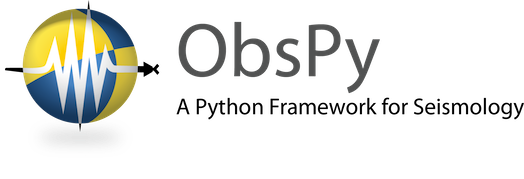
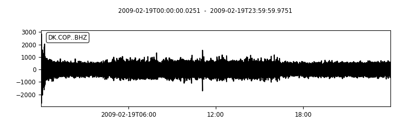

[数据处理] 开源免费 Obspy-地震数据处理工具

文章目录
Obspy 为地震行业而生

Obspy 简介
是一个针对地震领域开发的python库。最最重要的是开源免费哦，还再不断更新。
对地震学界内通常使用的几乎所有文件格式提供读写支持，它取代了大量的文件格式转换工具，例如SAC，MiniSEED，GSE2，SEISAN，Q等各种格式的地震数据；
整合了世界范围内可以获取地震数据的数据中心所发布数据的方法。
集成了大量地震学界所用的专有库，并用易用的接口统一了所有功能的调用。
在这样广泛的输入/输出支持的基础上，在处理程序时使用地震学家之间交流的专业术语。
使地震学软件包和工作更为便利，也利用这些功能为地震学进入更大的科学python生态系统建桥铺路，非常适合广大地球科学领域的科研工作人员。
Obspy 功能列表
- 统一的UTC时间（UTCDateTime,所有的时间都由该类负责定义和管理）
- 处理时间差
- 处理不同时区
- 地震观测数据读取（read函数）
- 支持多种格式，如SAC，MiniSEED，GSE2，SEISAN，Q等
- 处理元数据，通过stats访问元数据
- 处理波形数据，通过data访问波形数据，即观测数据
- 任意格式的导入导出、转换
- 数据合并
- 绘制图形
- 波形数据一分量、三分量
- 单通道、多通道
- 尺寸、颜色、时间段灵活自定义后绘制
- 沙滩球
- 球行射线路径、多距离射线路径、笛卡尔射线路径
- 到时
- ······
- 获取数据，支持全球多个地震数据中心获取不同格式的数据
- 如FDSN、IRIS DMC、······
- ······
- 滤波、采样
- 坐标转换
- 绘制频谱
- 底图种类丰富，可视化
- 多类编程语言和开发平台的互转
- matlab
- R
- ······
- 数据分析、变换、时频、······
- ······
Obspy 如何使用
安装Obspy
|
|
3句代码画数据波形
|
|
运行结果：
查看元数据与数据
|
|
Obspy 应用前景
- 地震学领域研究
- 地震数据治理、
- 地震数据质量评估、管控，以及优化台网
- 数据服务、推送
- 数据可视化、数据产品
- 软件产品，在obspy基础上开发新的方法库
- 构建全球地球科学共享、开放、生态圈
文章作者 海萨
上次更新 2019-05-04
许可协议 MIT